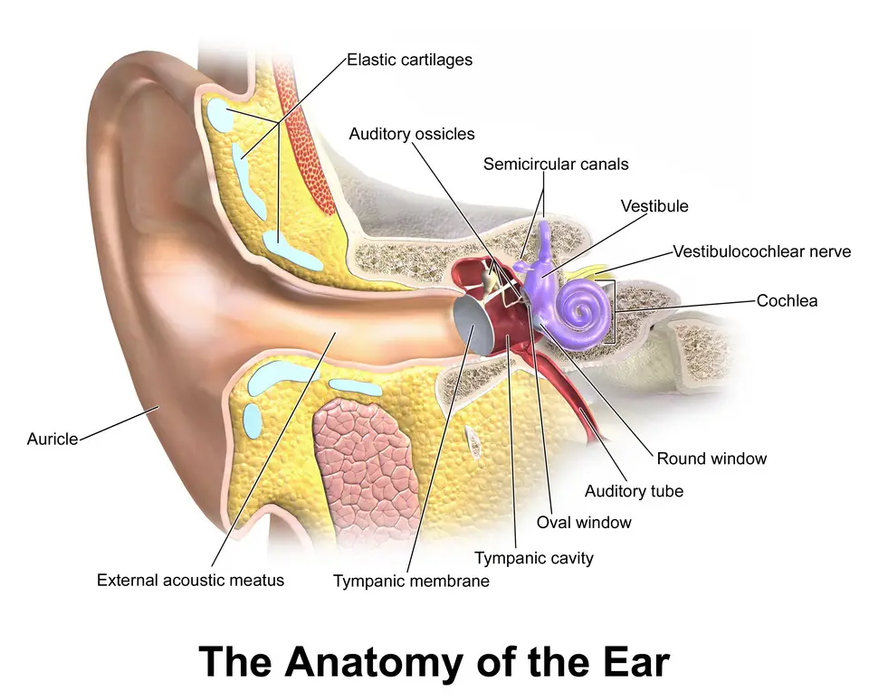
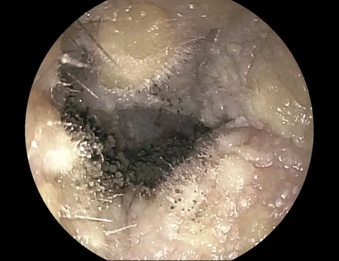

DX.4 — Otomycose
L'otomycose est bénigne, mais trois erreurs coûtent cher : prolonger des gouttes antibiotiques, instiller un produit ototoxique sur un tympan perforé et méconnaître une otite externe nécrosanteS3S13. Le diagnostic reste clinique : il repose sur le prurit, la plénitude et le feutrage fongique vu après nettoyageS1.
1. Définition
Les recommandations globales d'ENT (Ear, Nose and Throat) UK (Royaume-Uni), la société britannique d'oto-rhino-laryngologie, définissent l'otomycose comme l'infection fongique de la peau du conduit auditif externeS3. La revue Cochrane de 2021 la décrit comme une infection de l'oreille externe due à des champignonsS4. La revue européenne de Niš précise qu'il s'agit d'une infection superficielle, aiguë, subaiguë ou chronique, le plus souvent unilatéraleS6.
2. Épidémiologie (Suisse, puis Europe)
Aucune série suisse publiée ne mesure la fréquence de l'otomycose ; le support de formation des urgences des Hôpitaux universitaires de Genève (HUG) lui attribue 6 à 7 % des otites externesS1. Les revues européennes rapportent une proportion de 9 à 30 % chez les patients qui présentent les signes d'une infection du conduitS6. Les régions tropicales et subtropicales concentrent les fréquences les plus hautes, ce qui explique une partie de cet écartS6S3. Le tableau des fréquences, les terrains à risque et l'évolution naturelle situent le problème dans la pratique suisse. Le profil des patients complète ce tableau.
Fréquence : Suisse, puis Europe
Le tableau rassemble les chiffres lus ; il sépare la proportion d'otomycoses parmi les otites externes de la répartition des agentsS1S6.
| Donnée | Valeur | Population et année | Source |
|---|---|---|---|
| Otomycoses parmi les otites externes | 6 à 7 % | Support HUG des urgences, Genève, 2019 | S1 |
| Otomycose chez les patients suspects d’infection du conduit | 9 à 30 % | Revue de la littérature, Niš, 2023 | S6 |
| Aspergillus niger parmi les agents | 60 à 90 % | Support HUG, 2019 | S1 |
| Candida albicans parmi les agents | 10 à 40 % | Support HUG, 2019 | S1 |
| Origine bactérienne des otites externes | 90 % | Support HUG, 2019 | S1 |
Ces proportions viennent de séries hospitalières et ne mesurent pas l'incidence en population suisse ; elles servent à estimer la probabilité avant l'otoscopieS1S6.
Qui fait une otomycose ?
Les gouttes antibiotiques locales prolongées constituent un terrain classique, car elles éliminent la flore bactérienne qui freine les champignonsS3S1. Le diabète et l'immunodépression, dont l'infection par le virus de l'immunodéficience humaine (VIH), augmentent le risque et la gravitéS1S6. Le port d'écouteurs, l'embout occlusif d'un appareil auditif, le grattage par objet dur et la baignade répétée lèsent la barrière cutanée du conduitS6. Une cavité d'évidement mastoïdien après chirurgie otologique offre aussi une niche humide aux champignonsS6.
La forme bilatérale se rencontre plus souvent chez l'immunodéprimé ; elle doit donc faire rechercher ce terrain lorsqu'elle survient sans cause évidenteS6. Les enquêtes européennes ne montrent aucune variation saisonnière, contrairement aux séries tropicalesS6.
Âge, sexe et contexte de consultation
Les séries publiées décrivent surtout des adultes de 25 à 45 ans, mais d'autres travaux montrent une fréquence qui augmente avec l'âgeS6. La répartition entre hommes et femmes varie d'une série à l'autre, si bien qu'aucun sexe ne doit orienter le diagnosticS6. Les HUG rappellent que l'otite externe, toutes causes confondues, reste la première cause de consultation ORL (oto-rhino-laryngologie) à tous les âges, avec une fréquence qui baisse après 60 ansS2.
Les méthodes moléculaires ont montré que l'ancien « Aspergillus niger » regroupe plusieurs espèces noires, dont Aspergillus tubingensis, souvent la plus fréquenteS6. Cette précision change peu la conduite au cabinet, mais elle explique des sensibilités différentes aux antifongiquesS6.
Histoire naturelle et pronostic
L'otomycose reste en règle une affection bénigne et superficielle, qui ne menace pas la vieS6. Elle récidive cependant souvent et passe à la chronicité lorsque les débris persistent ou que le facteur favorisant demeureS6. Les formes graves, avec perforation tympanique, atteinte de l'oreille moyenne ou de l'os temporal, surviennent surtout chez l'immunodépriméS6. Une otite externe nécrosante peut être due à des champignons ; elle relève alors du circuit d’urgence décrit au point 11S3.
3. Physiopathologie
Le conduit auditif externe se défend par sa peau, par ses poils et par le cérumen, dont l'acidité freine les bactéries et les moisissures comme AspergillusS9S10. Le schéma de la base à connaître montre pourquoi les débris s'accumulent dans la portion profonde et pourquoi l'état du tympan décide du traitement. L'otomycose naît lorsque cette défense cède : l'humidité, le grattage ou un antibiotique local détruisent l'équilibre de la flore et laissent proliférer le champignonS3S6.
La chaîne physiopathologique relie chaque étape à un signe, puis à un geste, ce qui explique la place centrale du nettoyage. Le tableau de corrélation associe chaque perturbation à l'examen qui la montre et au traitement qui la corrige.
Base à connaître : le conduit auditif externe
Le conduit relie le pavillon au tympan ; ses glandes produisent le cérumen, qui capture les poussières et protège contre la prolifération microbienneS10. Un nettoyage profond retire ce cérumen protecteur et peut blesser la peau ou le tympan, ce qui ouvre la porte à l'infectionS10S9. Le figuré ci-dessous suit le conduit jusqu'au tympan ; chaque repère explique un signe ou un geste de ce cours.
Conduit auditif externe en coupe frontale. Ce schéma en couleur coupe l’oreille droite dans le plan frontal et suit le conduit auditif externe jusqu’au tympan.

Lisez d'abord seul ce cliché (conduit auditif externe en coupe frontale) : cherchez vous-même le signe.
La copie annotée (conduit auditif externe en coupe frontale) numérote les repères décrits ci-dessous.
- 1. L’entrée du conduit porte des poils protecteurs et des glandes qui fabriquent le cérumen, lequel capture poussières et germes.S10
- 2. Le cartilage élastique du segment externe se laisse redresser lorsque l’examinateur tire le pavillon vers le haut et l’arrière.S3
- 3. La portion profonde, proche du tympan, ne se nettoie bien que sous microscope, où l’on retire les débris fongiques.S1
- 4. Le tympan ferme le conduit ; sa perforation interdit les gouttes ototoxiques et fait préférer une crème.S13S6
- Le schéma montre une oreille saine : il ne montre ni le cérumen ni les débris fongiques qui masquent souvent le tympan.
- Une coupe frontale aplatit les courbures du conduit, que la traction du pavillon doit corriger avant l’otoscopie.
Ce que l'image décide. Le schéma justifie le nettoyage sous microscope de la portion profonde et le contrôle du tympan avant toute instillation.

De la spore au conduit obstrué
- La flore bactérienne et le cérumen acide limitent normalement la pousse des champignons saprophytes du conduitS9.
- Un antibiotique local prolongé, l'eau ou un traumatisme altèrent ce milieu, si bien que les spores d'Aspergillus ou les levures de Candida colonisent la peauS3S6.
- Le champignon forme un feutrage de filaments et de spores, qui donne des points gris, noirs ou jaunes pour Aspergillus et une sécrétion blanchâtre épaisse pour CandidaS1.
- La peau s'enflamme, se desquame et démange, ce qui entretient le grattage et de nouvelles microlésionsS6.
- Le bouchon fongique obstrue le conduit, d'où la sensation d'oreille pleine et la baisse d'audition de transmissionS1S6.
- Chez l'immunodéprimé, l'infection peut perforer le tympan, gagner l'oreille moyenne, puis envahir l'os temporal et les nerfs crâniensS6S5.
Le traitement agit donc d'abord sur la masse fongique par le débridement, puis sur la peau par l'antifongique local, et enfin sur la cause par l'arrêt des gouttes antibiotiques inutilesS1S5.
Corrélation : perturbation → exploration → traitement
Ce tableau relie chaque perturbation à l'examen qui la montre et au geste qui la corrigeS1S5S6.
| Perturbation | Exploration qui la montre | Traitement qui la corrige |
|---|---|---|
| Masse fongique dans le conduit | Otoscopie, puis otomicroscopie | Débridement par aspiration sous microscopeS1S5 |
| Infection cutanée par levure ou moisissure | Examen direct et culture mycologique | Antifongique azolé local, crème ou mècheS4S11 |
| Flore détruite par les gouttes antibiotiques | Anamnèse des traitements locaux | Arrêt des gouttes antibiotiques inutilesS3S12 |
| Perforation tympanique associée | Otomicroscopie après nettoyage | Crème non ototoxique, avis ORLS6S13 |
| Invasion osseuse chez l’immunodéprimé | Tomodensitométrie, biopsie | Triazole systémique en milieu spécialiséS5S3 |
4. Démarche diagnostique
La démarche écarte d'abord les deux urgences qui empruntent le même tableau : l'otite externe nécrosante et le carcinome du conduit, surtout s'il existe du tissu de granulationS3. Elle distingue ensuite l'otomycose des diagnostics fréquents, dont l'otite externe bactérienne, la dermatite du conduit et l'otite moyenne chronique avec perforationS3S1. Le tableau des diagnostics discriminants donne pour chacun l'élément qui tranche, le piège et la conduite.
Une douleur intense et nocturne, une paralysie faciale ou du tissu de granulation chez un diabétique âgé imposent l'avis ORL urgent, même si l'otoscopie montre des débris fongiquesS3.
Quand la mycose cache une ostéite
L'otite externe nécrosante touche surtout le sujet âgé, diabétique ou immunodéprimé ; Pseudomonas aeruginosa en est la cause habituelle, mais des champignons peuvent la provoquerS3. Elle part du conduit puis gagne la base du crâne, si bien qu'une otalgie nocturne sévère qui dure depuis plus d'un mois doit alerterS3. Une paralysie faciale peut en être un signe précoce, et le tissu de granulation siège classiquement au plancher du conduitS3. Le cours dédié, DX.9 — otite externe nécrosante, détaille l'imagerie et le traitement prolongé.
Diagnostics discriminants
Chaque ligne donne l'élément qui tranche, puis le piège et la conduite si ce diagnostic se confirmeS3S1S7.
| Diagnostic | Élément qui tranche | Piège | Conduite si positif |
|---|---|---|---|
| Otite externe nécrosante 🚩 (DX.9) | Otalgie nocturne sévère, granulation, atteinte d’un nerf crânien chez un terrain à risque | Croire à une simple mycose parce que des filaments se voient | Transfert ORL, imagerie, prélèvements avant antibiotiqueS3 |
| Carcinome du conduit | Granulation ou lésion qui saigne et persiste malgré un traitement bien conduit | Multiplier les gouttes au lieu de biopsier | Biopsie en milieu ORLS3S1 |
| Otite externe aiguë bactérienne (DX.1) | Douleur au tragus dominante, début en moins de 48 heures, absence de feutrage fongique | Prolonger les gouttes antibiotiques, ce qui favorise la mycose | Gouttes antibiotiques et corticoïdes sur tympan intactS1S3 |
| Dermatite eczémateuse (DX.5) | Prurit chronique, squames sèches, lien avec un produit ou un terrain atopique | Confondre squames blanches et levures | Éviction de l’allergène, corticoïde localS3 |
| Otite moyenne chronique (DX.3) | Perforation ancienne et écoulement venant de l’oreille moyenne | Appliquer une solution ototoxique sur un tympan ouvert | Avis ORL, gouttes non ototoxiquesS3 |
Une otite externe qui persiste au-delà de 2 semaines malgré un traitement bien conduit constitue un échec et doit faire rechercher une mycose ou une tumeurS7S1.
5. Anamnèse ciblée et drapeaux rouges
L'interrogatoire cherche d'abord à caractériser le prurit, symptôme dominant, puis la plénitude et la baisse d’audition, l'écoulement et la douleurS1S6. Il recense ensuite les causes favorisantes, car leur correction conditionne la guérison et prévient la récidiveS3S6. Les drapeaux rouges décident enfin de l'orientation urgente. L'erreur classique du débutant se joue précisément à cette étape.
Prurit : le symptôme typique
Le prurit du conduit associé à la plénitude constitue le motif typique de l'otomycose dans le support des HUGS1. Il siège dans le conduit, souvent d'un seul côté, et pousse le patient à se gratter avec un objet, ce qui aggrave les lésionsS6. Le prurit oriente sans prouver : la dermatite eczémateuse démange aussi fortement, sans débris fongiquesS3.
Erreur classique : renouveler les gouttes
Exemple. Une patiente de 52 ans, nageuse, reçoit des gouttes antibiotiques et corticoïdes pour une otite externe, puis revient après 3 semaines avec un prurit intense et une oreille bouchéeS1S3.
Erreur. Le débutant renouvelle les gouttes ou prescrit un antibiotique oral, ce qui entretient la mycose et retarde le diagnosticS3S12.
Raisonnement correct. Le mécanisme est la destruction de la flore par l'antibiotique local, et le signe qui en découle est le feutrage fongiqueS3S1. L'otoscopie après nettoyage le montre, puis la décision associe l'arrêt des gouttes et l'antifongique localS1S11.
Comment l'éviter. Toute otite externe qui ne guérit pas en 2 semaines se réexamine au lieu de se retraiter, car l'échec signale une mycose, une dermatite ou une tumeurS7S1.
Plénitude et baisse d’audition
La sensation d'oreille bouchée vient du bouchon fongique qui obstrue le conduit ; elle disparaît après le nettoyage, ce qui confirme son origine mécaniqueS1S6. La baisse d'audition reste donc de transmission ; une surdité brutale ou des vertiges intenses ne s'expliquent pas par une mycose simple et imposent un avisS6.
Écoulement : couleur et signification
L'écoulement de l'otite externe peut être blanc, noir, jaune ou clair, selon les recommandations d'ENT UKS3. Un dépôt noir ou gris en points oriente vers Aspergillus, alors qu'une sécrétion blanchâtre et épaisse oriente vers CandidaS1. Un écoulement abondant et pulsatile, ou muqueux, suggère plutôt une origine dans l'oreille moyenne à travers une perforationS3.
Douleur : modérée ou alarmante ?
La douleur de l'otomycose reste en règle modérée et variable, ce qui la distingue de l'otite externe bactérienne où l'otalgie domineS6S1. Une douleur intense, nocturne et persistante n'est donc pas typique ; chez un diabétique ou un immunodéprimé, elle doit faire évoquer une forme invasiveS3.
Questions et raison de chacune
| Question | Raison physiopathologique |
|---|---|
| Avez-vous mis des gouttes pour l’oreille, et pendant combien de temps ? | Les gouttes antibiotiques prolongées détruisent la flore et favorisent la mycoseS3S12 |
| Portez-vous un appareil auditif ou des écouteurs intra-auriculaires ? | L’embout occlusif retient l’humidité et lèse la peau du conduitS6 |
| Nagez-vous ou nettoyez-vous vos oreilles avec un objet ? | L’eau et le grattage altèrent la barrière cutanée et le cérumenS6S10 |
| Êtes-vous diabétique, transplanté ou sous immunosuppresseur ? | Ces terrains favorisent les formes graves et bilatéralesS1S6 |
| Avez-vous eu une opération de l’oreille ou une perforation ? | Une cavité opératoire ou un tympan ouvert modifient le choix du produitS6S13 |
Drapeaux rouges : signification et action
Chaque drapeau rouge impose une action immédiate, car il signale une forme invasive ou un autre diagnostic graveS3S1.
| Drapeau rouge | Signification | Action immédiate |
|---|---|---|
| Otalgie nocturne sévère chez un diabétique âgé | Otite externe nécrosante possible | Avis ORL urgent, pas de traitement local seulS3 |
| Paralysie faciale ou autre nerf crânien | Atteinte de la base du crâne | Transfert en centre ORLS3 |
| Tissu de granulation dans le conduit | Ostéite ou carcinome | Réévaluation ORL, biopsie si douteS3 |
| Absence d’amélioration en 48 à 72 heures chez un terrain fragile | Échec ou forme compliquée | Avis ORLS1 |
| Symptômes au-delà de 2 semaines malgré un traitement bien conduit | Mycose méconnue ou tumeur | Avis ORL et nettoyage sous microscopeS1S7 |
6. Examen physique ciblé, région par région
L'examen commence par l'inspection du pavillon et la palpation du tragus, puis passe à l'otoscopie du conduitS3. Il se poursuit par le tympan après nettoyage et se termine par l'examen des nerfs crâniens et de l’auditionS3S1. Le diagnostic se fait surtout à l'otoscopie, car l'aspect du feutrage fongique est très évocateurS1S6.
Temps 1 — pavillon, tragus et ganglions
Signe recherché. L'examinateur cherche un érythème ou une cellulite du pavillon et une adénopathie régionale, qui signalent une extension au-delà du conduitS3.
Geste. Il presse le tragus et tire doucement le pavillon ; une douleur vive et disproportionnée oriente vers une otite externe bactérienneS3.
Aspect. Dans l'otomycose simple, le pavillon reste souvent normal et la douleur provoquée reste modérée, ce qui aide à départager les deux diagnosticsS6S3.
Temps 2 — otoscopie du conduit
Geste. On tire le pavillon vers le haut et l'arrière chez l'adulte afin de redresser le conduit, puis on introduit le spéculum sans forcerS3.
Signe recherché. Les filaments fongiques apparaissent comme des points grisâtres, noirs ou jaunes sur un feutrage ; Candida forme plutôt une sécrétion blanchâtre et épaisseS1.
Aspect associé. La peau du conduit apparaît rouge et œdématiée, avec une desquamation de l'épithéliumS6.
Piège. Un dépôt blanchâtre ne prouve pas une candidose, car des squames de dermatite ou du cérumen humide lui ressemblent ; le prélèvement tranche dans le douteS5S6.
Otomycose à Aspergillus en otoscopie. Cette photographie en couleur montre le conduit auditif externe droit d'un patient atteint d'otomycose, vu à l'otoscope.

Lisez d'abord seul ce cliché : cherchez vous-même le signe.
La copie annotée porte les repères que la lecture guidée explique.
- 1. Les amas de spores noires forment un feutrage dense et granuleux, qui est le signe typique d'une otomycose à Aspergillus.S17
- 2. Le matériel blanc grisâtre filamenteux correspond au mycélium, qui recouvre la peau du conduit.S17
- 3. La paroi du conduit est tapissée de peau pâle, parsemée de quelques points noirs isolés.S17
- Le tympan n'est pas visible sur ce cliché : l'état du tympan reste à contrôler après nettoyage, car il décide du produit autorisé.
Ce que l'image décide. L'image apprend à reconnaître le feutrage fongique noir et blanc avant tout prélèvement ; elle ne remplace pas l'examen direct ni la culture, qui précisent l'espèce.
Temps 3 — tympan après nettoyage
Geste. Le nettoyage par aspiration sous microscope retire la masse fongique et rend le tympan visible ; il se fait au cabinet ORLS1S3.
Signe recherché. Une perforation tympanique peut compliquer l'otomycose, surtout chez l'immunodéprimé, si bien qu'elle doit être recherchée systématiquementS6.
Conséquence. Une perforation interdit Panotile et Ciproxin HC (hydrocortisone), dont l'information professionnelle contre-indique l'emploi sur tympan perforéS13S12.
Temps 4 — nerfs crâniens et audition
Geste. On teste la motricité faciale complète, puis la déglutition et la voix, car l'invasion de la base du crâne atteint d'abord le nerf facialS3.
Signe recherché. Une paralysie faciale, glossopharyngée ou spinale transforme une mycose apparente en urgence ORLS3S6.
Après le nettoyage. L'examen complet se répète au contrôle, car un nerf crânien peut être atteint secondairement si une forme invasive évolueS3.
7. Approche syndromique
Trois syndromes structurent la lecture du tableau : l'obstruction prurigineuse du conduit, l'inflammation cutanée surinfectée et le syndrome d’alarme invasifS1S6S3. Le tableau ci-dessous sépare pour chacun les signes fonctionnels des signes physiques.
| Syndrome | Signes fonctionnels | Signes physiques |
|---|---|---|
| 7.1 Obstruction prurigineuse | Prurit, plénitude, baisse d’audition | Feutrage fongique, conduit obstrué |
| 7.2 Inflammation cutanée surinfectée | Écoulement, douleur modérée | Peau rouge, œdème, desquamation |
| 7.3 Alarme invasive | Otalgie nocturne, céphalée | Granulation, paralysie d’un nerf crânien |
7.1 — Obstruction prurigineuse du conduit
Ce syndrome associe le prurit et la plénitude à un conduit comblé par un feutrage, ce qui constitue le tableau le plus typiqueS1. Le mécanisme est mécanique : la masse fongique occupe la lumière, si bien que l'audition revient après son retraitS1S6.
Plénitude. Elle se définit comme la sensation d'oreille bouchée ; elle se recherche à l'interrogatoire et traduit l'occupation de la lumière par la masse fongiqueS1S6.
Feutrage. Il se définit comme une masse cotonneuse ponctuée de spores ; on le voit à l'otoscopie après redressement du conduit, et il traduit la prolifération du champignonS1S3.
7.2 — Inflammation cutanée surinfectée
Ce syndrome traduit l'inflammation de la peau envahie, avec œdème, rougeur et desquamation, parfois aggravée par une surinfection bactérienneS6S5. Une otomycose peut d'ailleurs succéder à une infection bactérienne, si bien que les deux agents coexistent parfoisS6.
Œdème du conduit. Il se définit par un rétrécissement de la lumière ; on le juge au spéculum, et il gêne la pénétration du produit, d'où l'intérêt d'une mècheS3S11.
Desquamation. Elle se définit par des squames de l'épithélium du conduit ; elle traduit l'inflammation cutanée et peut faire confondre la mycose avec une dermatiteS6S3.
7.3 — Syndrome d’alarme invasif
Ce syndrome rare signe l'extension à l'os temporal et aux nerfs crâniens, décrite surtout chez l'immunodépriméS6. Les nerfs facial, glossopharyngien, vague, accessoire et hypoglosse peuvent être atteints, ce qui impose le circuit de l'otite externe nécrosanteS6S3.
Granulation. Elle se définit comme un tissu rouge et bourgeonnant ; elle siège classiquement au plancher du conduit et à la jonction ostéo-cartilagineuse, où elle signale l'ostéiteS3.
Paralysie faciale. Elle se recherche en faisant plisser le front, fermer les yeux et sourire ; elle traduit l'atteinte du nerf facial au voisinage du foramen stylomastoïdienS3.
8. Diagnostic positif et critères
Aucune société savante suisse ou européenne ne publie de critères formels de l'otomycose ; la revue de Niš souligne l'absence de recommandation officielle de diagnostic et de traitementS6. Le diagnostic repose donc sur l'anamnèse et l'otoscopie, de préférence sous microscope, et le laboratoire le confirme dans les cas douteuxS5S6. Les éléments retenus précisent ce qui suffit et ce qui ne suffit pas.
Ce qui suffit et ce qui ne suffit pas
| Élément | Valeur diagnostique |
|---|---|
| Prurit et plénitude avec feutrage fongique visible à l’otoscopie | Suffit en pratique pour traiter une forme typiqueS1 |
| Prurit isolé sans débris | Ne suffit pas, car la dermatite démange aussiS3 |
| Échec d’un traitement antibactérien local | Oriente vers la mycose sans la prouverS3 |
| Examen direct et culture mycologique positifs | Confirment l’agent ; ils restent indispensables dans les formes atypiquesS5S6 |
| Culture positive sans tableau clinique | Ne suffit pas, car des champignons saprophytes contaminent le conduitS6 |
La revue de Niš propose jusqu'à trois cultures successives pour distinguer un champignon pathogène d'un saprophyte lorsque le résultat est discordantS6.
9. Examens complémentaires
Le gold standard reste l'association de l'examen direct et de la culture mycologique d'un prélèvement du conduit, interprétés avec la cliniqueS5S6. En première intention, l'otoscopie avec nettoyage suffit dans la forme typique ; le prélèvement s'impose dans les formes persistantes, récidivantes ou chez l'immunodépriméS1S3S6. L'imagerie et le bilan sanguin ne servent qu'en cas de suspicion d'invasionS3. Les alternatives et examens de seconde intention complètent ce plan.
Examen direct du prélèvement
Indication. L'examen direct se demande devant une forme atypique, persistante ou récidivante, et chez tout patient immunodépriméS5S6.
Prescription. On prélève les débris au fond du conduit et l'on demande un examen mycologique direct, en plus de la recherche bactérienneS6.
Interprétation. L'examen direct à l'hydroxyde de potassium ou avec un azurant optique montre des filaments ou des levures en quelques minutesS5S6.
Piège. L'examen direct manque de sensibilité et ne nomme pas l'espèce ; un résultat négatif n'exclut donc pas la mycose si l'aspect est typiqueS6.
Culture mycologique et identification
Indication. La culture identifie l'espèce lorsque le traitement échoue ou que le terrain est fragileS5S6.
Interprétation. Aspergillus et Candida dominent ; en Europe, Candida parapsilosis figure parmi les levures fréquentes, à côté de Candida albicansS6.
Techniques. La spectrométrie de masse de type MALDI-TOF et les méthodes moléculaires précisent l'espèce, notamment au sein du complexe Aspergillus nigerS6.
Piège. Une culture positive isolée peut refléter un saprophyte ; elle ne justifie pas à elle seule un antifongique systémiqueS6.
Imagerie : seulement si l’on craint l’invasion
Indication. La tomodensitométrie ou l'imagerie par résonance magnétique se demandent devant un drapeau rouge, et non dans une mycose superficielleS3.
Interprétation. Elles cherchent une ostéite de la base du crâne ; les scintigraphies au gallium ou au technétium et la tomographie par émission de positons complètent le bilan spécialiséS3.
Alternatives. ENT UK accepte la tomodensitométrie ou l'imagerie par résonance magnétique, ce qui laisse à l'ORL le choix de la modalité selon le terrainS3.
Alternatives (9.c) et seconde intention (9.d)
| Situation | Examen | Raison |
|---|---|---|
| Grossesse | Otoscopie et prélèvement mycologique, sans imagerie irradiante | Le diagnostic reste local et cliniqueS1S6 |
| Enfant | Prélèvement mycologique seulement si la forme résiste | La forme typique se traite après nettoyageS1S6 |
| Doute entre mycose et tumeur | Biopsie de la lésion ou de la granulation | La biopsie écarte une néoplasie lorsque la réponse reste incomplèteS3 |
| Suspicion d’invasion | Tomodensitométrie puis biopsie, avant tout antimicrobien | Les cultures tissulaires guident le traitement systémiqueS3 |
| Résultats discordants | Cultures répétées, jusqu’à trois | Elles séparent un pathogène d’un saprophyteS6 |
Le prélèvement mycologique s'accompagne d'une recherche bactérienne, car les deux agents coexistent parfois dans le même conduitS6.
Bilan sanguin ciblé
Indication. La vitesse de sédimentation et la protéine C réactive se dosent lorsque l'on suspecte une otite externe nécrosanteS3.
Terrain. La recherche d'un diabète ou d'une immunodépression se justifie devant une forme bilatérale, récidivante ou sévère, car ces terrains favorisent l'otomycoseS6S1.
Interprétation. Des marqueurs inflammatoires élevés chez un diabétique avec otalgie nocturne renforcent l'indication d'imagerie et de biopsieS3.
10. Arbre décisionnel
L'arbre décisionnel traite d'abord la gravité, ensuite le tympan, puis la mycose elle-mêmeS3S1.
- Si un drapeau rouge existe, alors l'avis ORL urgent s'impose avant tout traitement local (conduite chronologique)S3.
- Sinon, le clinicien nettoie ou fait nettoyer le conduit sous microscope et contrôle le tympanS1.
- Si le tympan est intact, alors un antifongique azolé local se prescrit, par exemple la crème de clotrimazole sur mècheS11.
- Si le tympan est perforé ou invisible, alors l'ORL décide. Wiegand propose un antifongique systémiqueS16, Vennewald une crème azoléeS5, usage hors AIPS (Arzneimittel-Informations-Publikations-System, base suisse des informations professionnelles) car l'AIPS de Canesten exige un tympan intactS11 ; il proscrit les gouttes ototoxiquesS13.
- Le clinicien arrête en même temps les gouttes antibiotiques inutiles, car elles entretiennent la mycoseS3S12.
- Si l'évolution reste défavorable au-delà de 2 semaines, alors il fait prélever, recherche un terrain fragile et demande un avis ORLS7S1S6.
11. Prise en charge selon les recommandations suisses
11.A But. Le traitement vise la disparition du prurit et des débris, puis un conduit propre et sec au contrôleS1. La revue Cochrane décrit une résolution clinique complète chez environ 2 patients sur 3 sous clotrimazoleS4. Les données comparatives montrent que la certitude reste très faible entre les azolés.
11.B Moyens. Le nettoyage soigneux du conduit précède tout produit, car un antifongique ne pénètre pas une masse fongiqueS1S5. L'antifongique local se choisit selon le tympan : la crème de clotrimazole dispose d'un mode d'emploi auriculaire dans son information professionnelle suisseS11. Le support des HUG cite aussi une mèche imprégnée de kétoconazole en crème, dont l'information professionnelle ne prévoit pas l'usage auriculaireS1S14. Les gouttes ciprofloxacine et hydrocortisone et néomycine, polymyxine et fludrocortisone n'ont pas leur place, et la première est contre-indiquée dans les infections fongiquesS12S13.
L'acidification du conduit est toxique pour de nombreuses bactéries et pour les champignons, mais elle ne s'emploie qu'après avoir vérifié l'intégrité du tympanS3. La crème reste préférable chez le patient porteur d'une perforation, car sa viscosité limite le passage du produit dans l'oreille moyenneS6. Le traitement systémique par triazole se réserve à l'immunodéprimé et aux formes invasives, en milieu spécialiséS6S5. Les autres antifongiques locaux, l'antalgie et la pose de la mèche complètent ces moyens.
Situations spéciales. La grossesse, l’allaitement, l’enfant et le sujet âgé modifient surtout le choix de la spécialité et le suivi. Le tableau des médicaments résume les doses et les contre-indications issues des informations professionnelles suisses.
11.C Surveillance. Le contrôle au cabinet vérifie la disparition des débris et la tolérance de la mècheS1. Une otite externe traitée s'améliore en 48 à 72 heures et guérit en 10 à 14 jours au maximumS1. Au-delà de 2 semaines de symptômes malgré un traitement bien conduit, le traitement est en échec et l'avis ORL s'imposeS7S1.
11.D Pronostic et critères de sortie. La forme superficielle guérit sans séquelle chez la plupart des patients, mais la récidive reste fréquente si la cause persisteS6. Les critères de guérison sont énumérés un par un.
Urgence — conduite chronologique (forme invasive suspectée)
- Dès la consultation. Le médecin note l'otalgie nocturne, la granulation, le nerf facial et le terrain, puis il renonce au traitement local seulS3.
- Avant tout antimicrobien. L'ORL obtient l'imagerie, puis les cultures de l'écoulement et des biopsies de la granulation, car l'agent peut être résistant ou fongiqueS3.
- Ensuite. L'équipe pluridisciplinaire d'ORL, d'infectiologie, d'endocrinologie et de médecine interne fixe le traitement systémique prolongéS3.
- À prévoir. L'équilibration du diabète, la surveillance des nerfs crâniens et une imagerie de contrôle en fin de traitement font partie du planS3.
Le cours DX.9 détaille cette prise en charge, qui ne relève jamais du cabinet seulS3.
Que disent les essais ?
La revue Cochrane de 2021 a retenu 4 essais randomisés, soit 559 participants d'Espagne, du Mexique et d'Inde, et aucun essai contre placeboS4. Elle estime la résolution complète à 668 pour 1000 sous clotrimazole et à 835 pour 1000 sous d'autres azolés, sans différence démontréeS4. Le rapport de risques vaut 0,80, avec un intervalle de confiance à 95 % de 0,59 à 1,07, et la certitude des preuves est très faibleS4. Aucun effet indésirable grave n'a été rapporté dans l'essai qui l'a recherchéS4.
Ces résultats justifient le choix d'un azolé disponible et bien toléré, plutôt que la recherche d'un produit supérieurS4S5.
Autres antifongiques locaux et formes galéniques
Selon la revue de Vennewald et Klemm, le clotrimazole, le miconazole, le bifonazole, la ciclopiroxolamine et le tolnaftate sont des antifongiques locaux sûrs, même sur tympan perforéS5. Les triazoles oraux, comme l'itraconazole, le voriconazole et le posaconazole, pénètrent l'os et le système nerveux central ; ils servent dans l'otite fongique maligneS5.
Dans l'essai inclus par la revue Cochrane, la solution de bifonazole a provoqué un prurit et une brûlure sévères chez 5 patients sur 35, contre aucun sous la crèmeS4. La revue de Niš rapporte que la solution peut imprégner une compresse laissée 5 à 10 minutes, 2 à 4 fois par jourS6. Les antiseptiques et les acidifiants ne sont pas supérieurs aux antifongiques selon cette revueS6.
Antalgie et soins du conduit
Les antalgiques oraux, anti-inflammatoires non stéroïdiens et paracétamol, constituent le premier choix lorsque la douleur s'associe à l'inflammation du conduitS3. Les gouttes de benzocaïne ne sont pas recommandées, car elles limitent le contact entre le médicament local et la peau du conduitS3. Le patient évite de manipuler et de gratter son oreille, et il retire son appareil auditif ou ses écouteurs tant que l'écoulement persisteS3.
Pose de la mèche et application du produit
L'AIPS de Canesten décrit une mèche de gaze badigeonnée de crème, placée dans le conduit en tamponnant légèrement, sur tympan intactS11. Elle ne fixe ni la fréquence de renouvellement ni la durée auriculaire ; le médecin les prescrit et organise le contrôleS11. Pour l'otite externe aiguë, ENT UK retire la mèche après 48 à 72 heures ; ce délai ne s'applique pas tel quel à la mycoseS3.
Lorsque des gouttes sont prescrites, seuls 40 % environ des patients se les administrent correctement, si bien qu'une autre personne devrait les instillerS3. Le patient s'allonge sur le côté sain et garde la position 3 à 5 minutes après l'instillationS1S3.
Situations spéciales
| Situation | Conduite |
|---|---|
| Grossesse | Le clotrimazole ne s’emploie que sous contrôle médical et en cas d’indication absolueS11 |
| Allaitement | Le clotrimazole peut être utilisé, sans application sur le seinS11 |
| Enfant de moins de 2 ans | La crème de clotrimazole exige une prescription médicaleS11 |
| Immunodépression, diabète | Le prélèvement mycologique et l’avis ORL se demandent tôtS6S3 |
| Perforation tympanique | L'ORL choisit entre antifongique systémique (Wiegand)S16 et crème azolée hors AIPS (Vennewald)S5, car l'AIPS de Canesten exige un tympan intactS11 ; aucune goutte ototoxiqueS13 |
Le kétoconazole en crème n'a pas de posologie établie chez l'enfant et l'adolescent, faute de données, ce qui fait préférer le clotrimazole dans ces âgesS14S11.
Médicaments : dose, voie, durée, contre-indication
| Molécule ® | Dose AIPS | Voie et durée | Contre-indication majeure |
|---|---|---|---|
| Clotrimazole, Canesten® crème | Crème à 10 mg/gS11 | Mèche imprégnée dans le conduit, tympan intact ; durée fixée par le médecinS11 | Hypersensibilité aux imidazolésS11 |
| Kétoconazole, Nizoral® crème | Crème à 20 mg par grammeS14 | Peau 1 fois par jour ; usage auriculaire hors AIPSS14S1 | Hypersensibilité aux imidazolésS14 |
| Ciprofloxacine et hydrocortisone, Ciproxin® HC | Sans objet dans la mycose | Aucune | Infection fongique, perforation tympaniqueS12 |
| Panotile® | Sans objet dans la mycose | Aucune | Perforation tympaniqueS13 |
Critères de guérison et de sortie du suivi
- Le prurit et la plénitude ont disparu sans traitement en coursS1.
- Le conduit apparaît propre et sec, sans débris fongiques, au contrôle sous microscopeS1S5.
- Le tympan est visible et son état est documenté, perforé ou intactS6.
- Le facteur favorisant, comme les gouttes antibiotiques ou l'embout occlusif, a été corrigéS3S6.
- Aucun drapeau rouge n'est apparu pendant le traitementS3.
Clotrimazole — Canesten® crème (n° 37510)S11
| Classe | Antimycosique imidazolé qui inhibe la synthèse de l’ergostérol membranaire ; son spectre couvre levures, dermatophytes et moisissures, dont AspergillusS11 |
|---|---|
| Indication AIPS | Dermatomycoses à dermatophytes, à levures et à Malassezia ; l’AIPS décrit une méthode pour la mycose du conduit auditif à tympan intactS11 |
| Dose AIPS | Crème à 10 mg/g ; « Pour traiter une mycose du conduit auditif, le tympan étant intact, badigeonner une mèche de gaze de Canesten Crème et la placer dans le conduit auditif en tamponnant légèrement »S11 |
| Durée | L’AIPS ne fixe pas de durée propre à l’oreille ; pour les dermatomycoses à levures, elle indique en général 3 à 4 semainesS11 |
| Contre-indications | Hypersensibilité au principe actif, aux excipients ou à d’autres imidazolés ; pas d’application sur les muqueuses ni dans l’œilS11 |
| Grossesse | « Canesten doit être utilisé pendant la grossesse uniquement sous contrôle médical et seulement en cas d'indication absolue »S11 |
| Allaitement | « Le clotrimazole peut être utilisé pendant l'allaitement. Toutefois, pendant la période d'allaitement, Canesten Crème/Spray ne doit en aucun cas être appliqué directement sur le sein »S11 |
| Effets indésirables | Prurit, sensation de brûlure, dermatite de contact ; réactions d’hypersensibilité possibles, jusqu’à l’anaphylaxieS11 |
La crème contient de l'alcool cétostéarylique et de l'alcool benzylique, qui peuvent irriter ou provoquer une dermatite de contact ; une réaction locale impose d'arrêter et de réévaluerS11. Le spray contient de l'alcool isopropylique et du propylène glycol ; il ne remplace pas la crème dans le conduit, car l'AIPS ne décrit la méthode auriculaire que pour la crèmeS11.
Kétoconazole — Nizoral® crème (n° 46100)S14
| Classe | Antimycosique imidazolé, inhibiteur puissant du CYP3A4 (isoforme 3A4 du cytochrome, famille d'enzymes du foie) lorsqu’il passe dans le sang, ce qui reste peu probable par voie cutanéeS14 |
|---|---|
| Indication AIPS | Mycoses cutanées à dermatophytes ou à levures, candidoses cutanées, pityriasis versicolor et dermatite séborrhéiqueS14 |
| Dose AIPS | Crème à 20 mg par gramme, appliquée 1 fois par jour ; candidoses cutanées pendant 2 à 3 semainesS14 |
| Usage auriculaire | Le support des HUG mentionne une mèche imprégnée, mais l’AIPS ne décrit pas cet usage, qui reste hors AIPSS1S14 |
| Contre-indications | Hypersensibilité à un composant ou à un autre dérivé imidazoléS14 |
| Grossesse et allaitement | « On ne dispose d'aucune étude contrôlée concernant l'utilisation de Nizoral Crème pendant la grossesse et l'allaitement » ; « le risque pendant la grossesse et l'allaitement semble négligeable pour les fœtus et les nourrissons allaités en cas d'utilisation conforme » ; « Pendant l'allaitement, il convient cependant d'éviter toute application sur la poitrine »S14 |
| Enfant | Aucune posologie établie chez l’enfant et l’adolescent ; usage non recommandé chez le nourrissonS14 |
Après un corticoïde local prolongé, l'AIPS recommande de chevaucher les deux produits puis de diminuer le corticoïde en 2 à 3 semaines, car l'arrêt brutal irrite la peauS14.
Ciprofloxacine et hydrocortisone — Ciproxin® HC (n° 54807)S12
| Classe | Quinolone associée à l’hydrocortisone, en suspension auriculaireS12 |
|---|---|
| Indication AIPS | Inflammations bactériennes aiguës de l’oreille externe dues à des germes sensiblesS12 |
| Contre-indications | Perforation tympanique connue ou supposée, infections virales et infections fongiques du conduitS12 |
| Mise en garde | L’usage prolongé d’antibiotiques peut entraîner une prolifération de micro-organismes non sensiblesS12 |
| Effet indésirable lié | L’AIPS mentionne la mycose de la peau parmi les effets occasionnelsS12 |
| Grossesse et allaitement | Grossesse : « ne doit pas être utilisé pendant la grossesse, ou uniquement en cas d'absolue nécessité » ; allaitement : « ne doit pas être utilisé pendant l'allaitement, ou uniquement en cas d'absolue nécessité »S12 |
Cette fiche sert à éviter une erreur fréquente : renouveler ces gouttes devant une otite qui ne guérit pas, alors qu'une mycose en est souvent la causeS3S12.
Néomycine, polymyxine B, fludrocortisone et lidocaïne — Panotile® (n° 31957)S13
| Classe | Association de deux antibiotiques, d’un corticoïde et d’un anesthésique local, en gouttes auriculairesS13 |
|---|---|
| Indication AIPS | Otites externes aiguës, otites moyennes aiguës, furonculose du conduit et dermatites allergiquesS13 |
| Contre-indications | Perforation du tympan, état après chirurgie et lésion préexistante du conduit, en raison de l’ototoxicitéS13 |
| Mise en garde | Le corticoïde peut masquer, activer ou aggraver une infection préexistanteS13 |
| Durée maximale | La durée ne devrait pas dépasser 10 joursS13 |
| Grossesse et allaitement | « Il n'existe pas d'expérimentations animales suffisantes concernant l'incidence sur la grossesse, le développement embryonnaire, le développement foetal et/ou le développement postnatal. Le risque potentiel pour l'être humain n'est pas connu. La prudence est de mise en cas d'emploi pendant la grossesse » et l'allaitementS13 |
Le produit ne contient aucun antifongique ; il ne traite donc pas l'otomycose et son corticoïde peut l'aggraverS13.
12. Prévention
La prévention primaire vise l'eau et le traumatisme : le support des HUG conseille des bouchons souples pour nager, l'évacuation de l'eau par inclinaison de la tête et l'abandon du coton-tigeS1. Un sèche-cheveux à basse température peut sécher doucement le conduit, car garder l'oreille sèche prévient l'otite externeS3S1. Le nettoyage domestique se limite au pavillon et à l'entrée du conduit, car un nettoyage profond retire le cérumen protecteurS10.
La prévention secondaire repose sur un usage bref et justifié des gouttes antibiotiques, qui ne se renouvellent pas sans réexamenS3S12. La prévention tertiaire corrige le terrain, avec l'équilibration du diabète, l'entretien des embouts d'appareil auditif et les contrôles ORL réguliers chez les porteurs d'appareilS6S10. Les gestes propres aux porteurs d’appareil auditif et aux nageurs réduisent ensuite le risque de récidive.
Gestes pour les porteurs d’appareil auditif et les nageurs
Chez le porteur d'appareil auditif, l'embout occlusif retient l'humidité et frotte la peau, ce qui favorise l'otomycoseS6. Un contrôle régulier chez l'ORL prévient la récidive des bouchons et des infections, ce qui est particulièrement important pour ces patientsS10. Pendant une infection active, le patient limite le port de l'appareil jusqu'à la disparition de la douleur et de l'écoulementS3.
À défaut de bouchons, le nageur peut protéger son conduit par un coton imprégné d'huile d'olive ou de vaseline, puis absorber l'eau résiduelle avec une servietteS1. Une solution acidifiante préventive après la natation se discute chez le patient à risque, seulement si le tympan est intactS3.
Ces gestes ne remplacent pas le traitement d'une mycose en cours ; ils réduisent le risque de récidive une fois le conduit guériS6S1.
13. Points clés
- L'otomycose associe typiquement un prurit et une plénitude à un feutrage fongique visible à l'otoscopieS1.
- Les gouttes antibiotiques prolongées en constituent le principal facteur, si bien qu'il faut les arrêter et non les renouvelerS3.
- Le nettoyage du conduit précède l'antifongique, et l'état du tympan décide du produit autoriséS1S6.
- Canesten® crème décrit une mèche auriculaire seulement lorsque le tympan est intactS11.
- Une otalgie nocturne ou une paralysie faciale chez un diabétique impose d'exclure une otite externe nécrosanteS3.
14. Pièges et questions fréquentes à l'examen fédéral suisse
Chaque question porte sur une confusion fréquente de gravité, de critère, de dose ou de conduite, avec sa réponse et le point qui la justifieS3S1.
| Question | Réponse | Raison |
|---|---|---|
| Une otite externe traitée 3 semaines par Ciproxin HC démange toujours : faut-il prolonger les gouttes ? | Non, il faut arrêter et chercher une mycose. | Ciproxin HC est contre-indiqué dans les infections fongiques et favorise la prolifération de germes non sensibles (point 11)S12 |
| Des points noirs sur un feutrage du conduit évoquent quel agent ? | Aspergillus, le plus souvent niger. | Candida donne plutôt une sécrétion blanchâtre épaisse (point 6)S1 |
| Peut-on poser une mèche de Canesten crème sur un tympan perforé ? | Non, selon l’AIPS. | L’AIPS ne décrit la méthode auriculaire qu’avec un tympan intact (point 11)S11 |
| Faut-il une culture mycologique dans toute otomycose typique ? | Non. | Elle se réserve aux formes atypiques, persistantes ou à l’immunodéprimé (point 9)S5S6 |
| Un diabétique de 75 ans a une otalgie nocturne et des filaments fongiques : quelle conduite ? | Avis ORL urgent. | Une otite externe nécrosante fongique ou bactérienne doit être exclue (points 4 et 11)S3 |
| Le spray Canesten peut-il remplacer la crème dans le conduit ? | Non. | L’AIPS réserve la méthode auriculaire à la crème (point 11)S11 |
| Quand parler d’échec d’une otite externe ? | Au-delà de 2 semaines malgré un traitement bien conduit. | Il faut alors chercher une mycose ou une tumeur (point 10)S7S1 |
| Un azolé local est-il nettement supérieur aux autres ? | Non. | La revue Cochrane ne montre aucune différence démontrée, avec une certitude très faible (point 11)S4 |
Sources
Toutes les sources ont été lues et consultées le 12.11.2026 (Europe/Zurich).
- [S1] HUG, Silésia da Graça. L'oreille aux urgences (UUA) : otites. Support de formation, Hôpitaux universitaires de Genève, 24.07.2019. https://www.hug.ch/sites/interhug/files/atelier_mpr/24.07.19_presentation_sur_otites_5.pdf
- [S2] HUG, Service d'ORL et de chirurgie cervico-faciale. Otite externe. Page d'information, mise à jour du 26.03.2026. https://www.hug.ch/orl-chirurgie-cervico-faciale/otite-externe
- [S3] Thaw MH. Otitis externa. ENT UK, Global ENT Guidelines, mars 2023. https://www.entuk.org/_userfiles/pages/files/guidelines/global%20ent%20guidelines/otitis_externa.pdf
- [S4] Lee A, Tysome JR, Saeed SR. Topical azole treatments for otomycosis. Cochrane Database Syst Rev 2021;5:CD009289. doi:10.1002/14651858.CD009289.pub2 (PMID 34033120, résumé)
- [S5] Vennewald I, Klemm E. Otomycosis: diagnosis and treatment. Clin Dermatol 2010;28(2):202-211. doi:10.1016/j.clindermatol.2009.12.003 (PMID 20347664, résumé)
- [S6] Bojanović M, Stalević M, Arsić-Arsenijević V et al. Etiology, predisposing factors, clinical features and diagnostic procedure of otomycosis: a literature review. J Fungi 2023;9(6):662. doi:10.3390/jof9060662 (PMC10302809)
- [S7] Kaushik V, Malik T, Saeed SR. Interventions for acute otitis externa. Cochrane Database Syst Rev 2010;(1):CD004740. doi:10.1002/14651858.CD004740.pub2 (PMID 20091565, résumé)
- [S8] Mayser P. Das Ohrekzem und seine Differenzialdiagnosen. Schweizer Zeitschrift für Dermatologie und Venerologie (Rosenfluh) 2018;4:12-18. https://www.rosenfluh.ch/media/dermatologie-aesthetische-medizin/2018/04/Das-Ohrekzem-und-seine-Differenzialdiagnosen.pdf
- [S9] Olina M, Cametti M, Guglielmetti C et al. Otite esterna. Recenti Prog Med 2002;93(2):104-107 (PMID 11887343, résumé anglais)
- [S10] Fitaire C, avec le Dr Nils Guinand (HUG). Zoom sur l'oreille externe. Planète Santé, reprise de Pulsations (HUG), 13.10.2020. https://www.planetesante.ch/Magazine/Sante-au-quotidien/Mecanismes-du-corps/Zoom-sur-l-oreille-externe
- [S11] Swissmedic, AIPS Canesten® Crème/Spray (clotrimazole), n° 37510, mise à jour septembre 2026. https://files.refdata.ch/simis-public-prod/MedicinalDocuments/334d255568a44527ae9118ff1beec785-fr.html
- [S12] Swissmedic, AIPS Ciproxin® HC (ciprofloxacine, hydrocortisone), n° 54807, mise à jour mars 2024. https://files.refdata.ch/simis-public-prod/MedicinalDocuments/60c59a399aab401fadc6cd1179773b3f-fr.html
- [S13] Swissmedic, AIPS Panotile (néomycine, polymyxine B, fludrocortisone, lidocaïne), n° 31957, mise à jour mars 2021. https://files.refdata.ch/simis-public-prod/MedicinalDocuments/2982497d75d8429f94238a7ee10de662-fr.html
- [S14] Swissmedic, AIPS Nizoral® Crème (kétoconazole), n° 46100, mise à jour novembre 2024. https://files.refdata.ch/simis-public-prod/MedicinalDocuments/884770cdd92349c8974b8670810a41e3-fr.html
- [S16] Wiegand S, Berner R, Schneider A, Lundershausen E, Dietz A. Otitis externa: investigation and evidence-based treatment. Dtsch Arztebl Int 2019;116(13):224-234 (texte intégral lu le 12.11.2026). https://pmc.ncbi.nlm.nih.gov/articles/PMC6522672/
- [S15] Blausen.com staff. Medical gallery of Blausen Medical 2014, The anatomy of the ear. WikiJournal of Medicine 2014 ; Wikimedia Commons, licence CC BY 3.0. https://commons.wikimedia.org/wiki/File:Blausen_0328_EarAnatomy.png
- [S17] Koda K. Otomycosis caused by Aspergillus identified by characteristic otoscopic findings. J Gen Fam Med 2026, figure 1 (légende lue sur Europe PubMed Central le 12.11.2026) ; licence CC BY 4.0. https://doi.org/10.1002/jgf2.70103